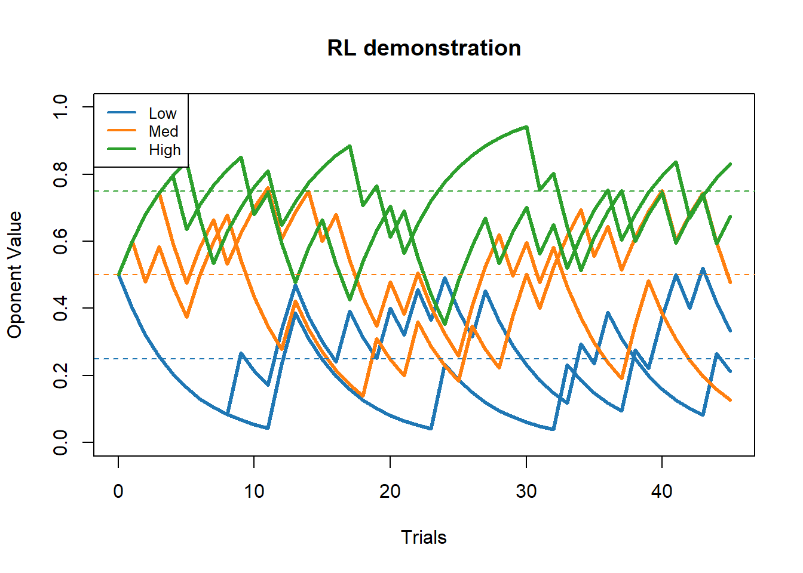
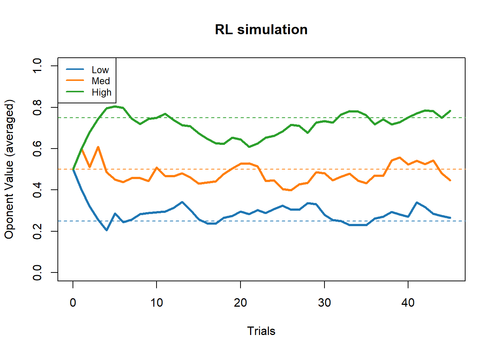
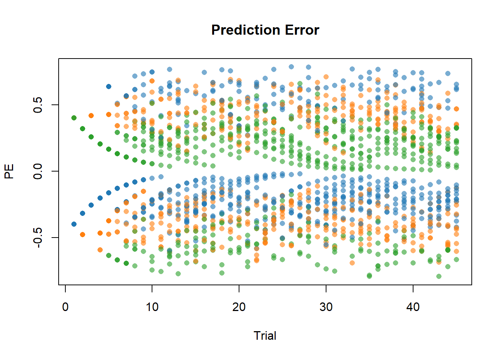

RL <- function(V, R, alpha = .2){
return (V+alpha*(R-V))
}Reinforcement Learning
Reinforcement learning on SingleCell task
The simplest model:
\(V_{t+1} = V_t + \alpha PE\) ,
with \(PE = R_t-V_t\) ,
with \(V_t\) perceived value at the time \(t\) and \(R_t\) the feedback 1 for win 0 for loosing.
Here the value of \(V_t\) is personal for an oponent that means we will have to run independant RL model for each oponent. We might think of some dependencies later. Exemple : when I update the value of one oponent does it affects the values of the other oponents.
Real data:
Now I will import data from pat_02495_0949:
The treatment will be done in R for this time.
pat_files = list.files(path="TrialbyTrial/",pattern = "PostSpikes")
pat = read.table(file=paste0("TrialbyTrial/",pat_files[1]),sep=",",header=T)
print(paste0("Patient: ",pat_files[1]," did ",dim(pat)[1], " trials which correspond to ",dim(pat)[1]/45," blocks."))#Sanity check this should be an integer[1] "Patient: Physio_pat_02495_0949_PostSpikes_trials.csv did 270 trials which correspond to 6 blocks."pat$Trial = ifelse(pat$Trial>45,pat$Trial-45,pat$Trial) #Correction of data collection This patient did 6 blocks let’s run 6 RL models (\(V_{t+1} = V_t + \alpha (R_t-V_t)\)):
V_init = 0.5
V = matrix(NA,45,dim(pat)[1]/45)
conditions = matrix(NA,2,dim(pat)[1]/45)
for (i in 1:(dim(pat)[1]/45)){
v = V_init
sub = pat[((i-1)*45+1):((i-1)*45+45),]
R = sub$WinLose
for(t in 1:45){
v = RL(v,R[t],0.2)
V[t,i] = v
}
#Here it should be only one everytime but as sanity check I'll put unique()
conditions[1,i] = unique(sub$WinProb)
conditions[2,i] = unique(sub$Condition)
}
V = rbind(rep(V_init,dim(pat)[1]/45),V)Graphical representation of these 6 RL
colours = c("#1f77b4","#ff7f0e","#2ca02c")
cond = ifelse(conditions[1,]=="low",1,ifelse(conditions[1,]=="med",2,3))
plot(numeric(0), xlim = c(0, 45), ylim = c(0, 1), main = "RL demonstration",ylab = "Oponent Value",xlab="Trials")
for (i in 1:ncol(V)) {
lines(0:45, V[, i],col = colours[cond[i]],lwd=3)
}
abline(h = seq(.25,.75,.25),col = colours,lty=2)
legend("topleft",legend = c("Low","Med","High"),col = colours,lty=1,lwd=2,cex=0.8)
By averaging on conditions:
plot(numeric(0), xlim = c(0, 45), ylim = c(0, 1), main = "RL demonstration",ylab = "Oponent Value",xlab="Trials")
cond = levels(as.factor(conditions[1,]))[c(2,3,1)]#To obtain Low Med High
for (i in 1:length(cond)){
y = rowMeans(V[,which(conditions[1,]==cond[i])])
lines(0:45,y ,col = colours[i],lwd=3)
}
abline(h = seq(.25,.75,.25),col = colours,lty=2)
legend("topleft",legend = c("Low","Med","High"),col = colours,lty=1,lwd=2,cex=0.8)
For every participant
pat_files = list.files(path="TrialbyTrial/",pattern="PostSpikes")#Files of all participants only for the activation pôst stim
V_stack = NULL;PE_stack = NULL;
for (p in 1:length(pat_files)){
#Read data
pat = read.table(file=paste0("TrialbyTrial/",pat_files[p]),sep=",",header=T)
pat_name = paste(strsplit(pat_files[p],split = "_")[[1]][2:4],collapse = "_")
print(paste0("Processing patient: ",pat_name," did ",dim(pat)[1], " trials which correspond to ",dim(pat)[1]/45," blocks...."))#Sanity check this should be an integer
if ((dim(pat)[1]/45)%%1!=0){
print("Skipped error in data")
}else{
pat$Trial = ifelse(pat$Trial>45,pat$Trial-45,pat$Trial) #Correction of data collection
#Simulation RL
V_init = 0.5
V = matrix(NA,dim(pat)[1]/45,45)
PE = matrix(NA,dim(pat)[1]/45,45)
conditions = matrix(NA,dim(pat)[1]/45,2)
for (i in 1:(dim(pat)[1]/45)){
v = V_init
sub = pat[((i-1)*45+1):((i-1)*45+45),]
R = sub$WinLose
for(t in 1:45){
v = RL(v,R[t],0.2)
PE[i,t] = R[t]-v
V[i,t] = v
}
#Here it should be only one everytime but as sanity check I'll put unique() (it will bug if there is more than one item)
conditions[i,1] = unique(sub$WinProb)
conditions[i,2] = unique(sub$Condition)
}
V = cbind(rep(pat_name,dim(conditions)[1]),conditions,rep(V_init,dim(pat)[1]/45),V)
PE = cbind(rep(pat_name,dim(conditions)[1]),conditions,rep(NA,dim(pat)[1]/45),PE)
V_stack = rbind(V_stack,V)
PE_stack = rbind(PE_stack,PE)
}
}[1] "Processing patient: pat_02495_0949 did 270 trials which correspond to 6 blocks...."
[1] "Processing patient: pat_02578_1036 did 270 trials which correspond to 6 blocks...."
[1] "Processing patient: pat_02680_1158 did 405 trials which correspond to 9 blocks...."
[1] "Processing patient: pat_03092_1538 did 403 trials which correspond to 8.95555555555556 blocks...."
[1] "Skipped error in data"
[1] "Processing patient: pat_03128_1591 did 404 trials which correspond to 8.97777777777778 blocks...."
[1] "Skipped error in data"
[1] "Processing patient: pat_03138_1601 did 405 trials which correspond to 9 blocks...."
[1] "Processing patient: pat_03146_1608 did 405 trials which correspond to 9 blocks...."V_stack = as.data.frame(V_stack)plot(numeric(0), xlim = c(0, 45), ylim = c(0, 1), main = "RL simulation",ylab = "Oponent Value (averaged)",xlab="Trials")
cond = levels(as.factor(conditions[,1]))[c(2,3,1)]#To obtain Low Med High
for (i in 1:length(cond)){
sub = subset(V_stack[,4:dim(V_stack)[2]],V_stack[,2]==cond[i])
#print(paste("Condition:",cond[i],dim(sub)[1],"rows."))
#To ensure that everything is numeric
sub1 <- as.data.frame(sub)
sub1[] <- lapply(sub1, as.numeric)
y = colMeans(sub1)
lines(0:45,y ,col = colours[i],lwd=3)
}
abline(h = seq(.25,.75,.25),col = colours,lty=2)
legend("topleft",legend = c("Low","Med","High"),col = colours,lty=1,lwd=2,cex=0.8)
Now let’s see if there is a correlation between \(PE\) and the number of spikes by trial
Table management:
for (p in 1:length(pat_files)){
pat = read.table(file=paste0("TrialbyTrial/",pat_files[p]),sep=",",header=T)
pat_name = paste(strsplit(pat_files[p],split = "_")[[1]][2:4],collapse = "_")
print(paste0("Processing patient: ",pat_name," did ",dim(pat)[1], " trials which correspond to ",dim(pat)[1]/45," blocks...."))#Sanity check this should be an integer
if ((dim(pat)[1]/45)%%1!=0){
print("Skipped error in data")
}else{
for (t in 1:(dim(pat)[1]/45)){
sub = pat[((t-1)*45+1):((t-1)*45+45),]
}
}
}[1] "Processing patient: pat_02495_0949 did 270 trials which correspond to 6 blocks...."
[1] "Processing patient: pat_02578_1036 did 270 trials which correspond to 6 blocks...."
[1] "Processing patient: pat_02680_1158 did 405 trials which correspond to 9 blocks...."
[1] "Processing patient: pat_03092_1538 did 403 trials which correspond to 8.95555555555556 blocks...."
[1] "Skipped error in data"
[1] "Processing patient: pat_03128_1591 did 404 trials which correspond to 8.97777777777778 blocks...."
[1] "Skipped error in data"
[1] "Processing patient: pat_03138_1601 did 405 trials which correspond to 9 blocks...."
[1] "Processing patient: pat_03146_1608 did 405 trials which correspond to 9 blocks...."#Aborted trying the other way around firstTAB = NULL
cond = c("low","med","high")
treatment = c("Social","NonSocial")
for (p in 1:length(pat_files)){
pat = read.table(file=paste0("TrialbyTrial/",pat_files[p]),sep=",",header=T)
pat_name = paste(strsplit(pat_files[p],split = "_")[[1]][2:4],collapse = "_")
print(paste0("Processing patient: ",pat_name," did ",dim(pat)[1], " trials which correspond to ",dim(pat)[1]/45," blocks...."))#Sanity check this should be an integer
if ((dim(pat)[1]/45)%%1!=0){
print("Skipped error in data")
}else{
for (co in 1:length(cond)){
condi = cond[co]
for (tr in 1:length(treatment)){
treat = treatment[tr]
sub = subset(PE_stack,PE_stack[,1]==pat_name & PE_stack[,2]==condi & PE_stack[,3]==treat)
if (dim(sub)[1]>0){
sub2 = subset(pat,pat$Condition == treat & pat$WinProb == condi)#The order is the same for both table because PE_stack is a child from pat
for (i in 1:dim(sub)[1]){
block = sub2[((i-1)*45+1):((i-1)*45+45),] #the i^th block
PE = as.numeric(sub[i,1:45+4])
Patient = rep(pat_name,dim(block)[1])
tab = cbind(Patient,block[,2:dim(block)[2]],PE)
TAB = rbind(TAB,tab)
}
}
}
}
}
}[1] "Processing patient: pat_02495_0949 did 270 trials which correspond to 6 blocks...."
[1] "Processing patient: pat_02578_1036 did 270 trials which correspond to 6 blocks...."
[1] "Processing patient: pat_02680_1158 did 405 trials which correspond to 9 blocks...."
[1] "Processing patient: pat_03092_1538 did 403 trials which correspond to 8.95555555555556 blocks...."
[1] "Skipped error in data"
[1] "Processing patient: pat_03128_1591 did 404 trials which correspond to 8.97777777777778 blocks...."
[1] "Skipped error in data"
[1] "Processing patient: pat_03138_1601 did 405 trials which correspond to 9 blocks...."
[1] "Processing patient: pat_03146_1608 did 405 trials which correspond to 9 blocks...."print(paste0("Dimension of the big table: ",dim(TAB)[1]," ",dim(TAB)[2],", this represents ",dim(TAB)[1]/45," trials"))[1] "Dimension of the big table: 1755 58, this represents 39 trials"Correlation anlysis
Patients = levels(as.factor(TAB$Patient))
abs=T
for (p in Patients){
print(paste("Patient:",p))
stab = TAB[TAB$Patient==p,]
#Clean the non relevant neurons
tab = stab[,-(which(colSums(stab[,7:(dim(stab)[2]-1)])==0)+6)]
#Build the most complete model
# predictor_cols <- paste(names(tab)[2:(ncol(tab) - 1)], collapse = " + ")
# formula <- as.formula(paste("PE ~", predictor_cols))
#
# mod_comp = lm(formula,data=tab) # Be careful you can run this model only if there is at least two treatment, conditions otherwise you cannot apply contrast
#Only take into account the spikes
predictor_cols <- paste(names(tab)[7:(ncol(tab) - 1)], collapse = " + ")
if (abs){
formula <- as.formula(paste("abs(PE) ~", predictor_cols))
mod = lm(formula,data=tab)
}else{
formula <- as.formula(paste("PE ~", predictor_cols))
mod = lm(formula,data=tab)
}
print(summary(mod))
print("-------------------------------------------------")
print("")
}[1] "Patient: pat_02495_0949"
Call:
lm(formula = formula, data = tab)
Residuals:
Min 1Q Median 3Q Max
-0.33585 -0.12512 -0.02904 0.12126 0.40784
Coefficients: (1 not defined because of singularities)
Estimate Std. Error t value Pr(>|t|)
(Intercept) 0.363305 0.022525 16.129 <2e-16 ***
Post_spikes1 -0.026774 0.019574 -1.368 0.1725
Post_spikes2 0.045299 0.030393 1.490 0.1373
Post_spikes3 -0.008656 0.004845 -1.787 0.0751 .
Post_spikes4 -0.001225 0.003192 -0.384 0.7014
Post_spikes5 NA NA NA NA
Post_spikes6 0.001489 0.003700 0.402 0.6877
Post_spikes7 0.008369 0.013507 0.620 0.5361
---
Signif. codes: 0 '***' 0.001 '**' 0.01 '*' 0.05 '.' 0.1 ' ' 1
Residual standard error: 0.1781 on 263 degrees of freedom
Multiple R-squared: 0.03096, Adjusted R-squared: 0.008854
F-statistic: 1.401 on 6 and 263 DF, p-value: 0.2146
[1] "-------------------------------------------------"
[1] ""
[1] "Patient: pat_02578_1036"
Call:
lm(formula = formula, data = tab)
Residuals:
Min 1Q Median 3Q Max
-0.34985 -0.12455 0.00154 0.11432 0.43316
Coefficients:
Estimate Std. Error t value Pr(>|t|)
(Intercept) 0.360839 0.015641 23.071 <2e-16 ***
Post_spikes8 0.001454 0.010323 0.141 0.888
Post_spikes9 -0.001532 0.005959 -0.257 0.797
Post_spikes10 -0.006790 0.009681 -0.701 0.484
---
Signif. codes: 0 '***' 0.001 '**' 0.01 '*' 0.05 '.' 0.1 ' ' 1
Residual standard error: 0.1755 on 266 degrees of freedom
Multiple R-squared: 0.002298, Adjusted R-squared: -0.008955
F-statistic: 0.2042 on 3 and 266 DF, p-value: 0.8934
[1] "-------------------------------------------------"
[1] ""
[1] "Patient: pat_02680_1158"
Call:
lm(formula = formula, data = tab)
Residuals:
Min 1Q Median 3Q Max
-0.34616 -0.13426 -0.00561 0.12757 0.44140
Coefficients:
Estimate Std. Error t value Pr(>|t|)
(Intercept) 0.328094 0.016936 19.372 <2e-16 ***
Post_spikes11 0.012168 0.004906 2.480 0.0135 *
Post_spikes12 -0.004883 0.003947 -1.237 0.2168
Post_spikes13 -0.010149 0.011310 -0.897 0.3700
---
Signif. codes: 0 '***' 0.001 '**' 0.01 '*' 0.05 '.' 0.1 ' ' 1
Residual standard error: 0.1725 on 401 degrees of freedom
Multiple R-squared: 0.0175, Adjusted R-squared: 0.01015
F-statistic: 2.38 on 3 and 401 DF, p-value: 0.06918
[1] "-------------------------------------------------"
[1] ""
[1] "Patient: pat_03138_1601"
Call:
lm(formula = formula, data = tab)
Residuals:
Min 1Q Median 3Q Max
-0.34621 -0.13280 -0.02102 0.11213 0.41174
Coefficients:
Estimate Std. Error t value Pr(>|t|)
(Intercept) 3.623e-01 3.169e-02 11.434 <2e-16 ***
Post_spikes36 -2.153e-02 1.218e-02 -1.768 0.0779 .
Post_spikes37 -6.385e-03 3.852e-03 -1.658 0.0982 .
Post_spikes38 -5.129e-05 7.055e-03 -0.007 0.9942
Post_spikes39 1.159e-02 1.346e-02 0.861 0.3895
Post_spikes40 1.450e-03 1.882e-03 0.770 0.4416
---
Signif. codes: 0 '***' 0.001 '**' 0.01 '*' 0.05 '.' 0.1 ' ' 1
Residual standard error: 0.1715 on 399 degrees of freedom
Multiple R-squared: 0.01628, Adjusted R-squared: 0.003952
F-statistic: 1.321 on 5 and 399 DF, p-value: 0.2543
[1] "-------------------------------------------------"
[1] ""
[1] "Patient: pat_03146_1608"
Call:
lm(formula = formula, data = tab)
Residuals:
Min 1Q Median 3Q Max
-0.42165 -0.12407 -0.00424 0.12048 0.44364
Coefficients:
Estimate Std. Error t value Pr(>|t|)
(Intercept) 3.181e-01 2.795e-02 11.380 < 2e-16 ***
Post_spikes41 7.126e-06 2.080e-03 0.003 0.99727
Post_spikes42 5.954e-03 1.428e-03 4.169 3.77e-05 ***
Post_spikes43 1.266e-02 9.000e-03 1.406 0.16043
Post_spikes44 1.967e-02 1.018e-02 1.931 0.05415 .
Post_spikes45 4.954e-03 3.733e-03 1.327 0.18531
Post_spikes46 3.074e-03 8.357e-03 0.368 0.71323
Post_spikes47 -7.916e-03 2.843e-03 -2.784 0.00562 **
Post_spikes48 -4.328e-03 3.826e-03 -1.131 0.25867
Post_spikes49 8.123e-03 4.377e-03 1.856 0.06422 .
Post_spikes50 -3.486e-03 3.533e-03 -0.987 0.32431
Post_spikes51 1.172e-03 5.937e-03 0.197 0.84362
---
Signif. codes: 0 '***' 0.001 '**' 0.01 '*' 0.05 '.' 0.1 ' ' 1
Residual standard error: 0.1685 on 393 degrees of freedom
Multiple R-squared: 0.1303, Adjusted R-squared: 0.106
F-statistic: 5.353 on 11 and 393 DF, p-value: 6.312e-08
[1] "-------------------------------------------------"
[1] ""Graphical representation of \(PE\)
alpha = 0.6
colours_a = c(rgb(31/255,119/255,180/255,alpha),rgb(255/255,127/255,14/255,alpha),rgb(44/255,160/255,44/255,alpha))
plot(rep(seq(1,45,1),39),TAB$PE,col=colours_a[ifelse(TAB$WinProb=="low",1,ifelse(TAB$WinProb=="med",2,3))],pch=16,main = "Prediction Error",ylab = "PE",xlab="Trial")